内科・消化器内科
患者様に寄り添った安心の消化器診療を
消化器疾患の専門的な診療から苦痛の少ない内視鏡検査まで
豊富な経験を持つ専門医が、あなたの健康をお守りします。
01
POINT
消化器病専門医による
丁寧な診療
02
POINT
最新機器による
精密な内視鏡検査
03
POINT
胃・大腸カメラの
同日検査が可能
消化器疾患の専門的な診療から苦痛の少ない内視鏡検査まで
豊富な経験を持つ専門医が、あなたの健康をお守りします。
消化器病専門医による
丁寧な診療
最新機器による
精密な内視鏡検査
胃・大腸カメラの
同日検査が可能
Clinic Features
消化器病専門医による
総合的な診療
当院の院長は、以前勤務していた病院で消化器内科部長と内視鏡センター長を務めておりました。食道・胃・十二指腸・大腸などの消化管の病気は内視鏡検査を主体に、肝臓・胆嚢・膵臓などの病気については血液検査や超音波(エコー)検査を中心に診断・治療を行っています。CTやMRIといった検査が必要な際には、大学病院と連携してスムーズに対応いたします。
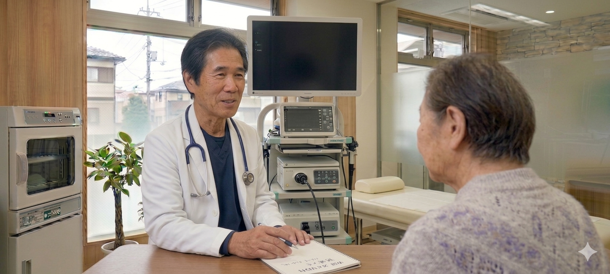
幅広い消化器症状に
専門的に対応
腹痛・胃もたれ・逆流性食道炎・ピロリ菌・便秘・過敏性腸症候群など、消化器のさまざまな症状に対応。問診から検査・治療・経過観察まで、専門的にサポートいたします。
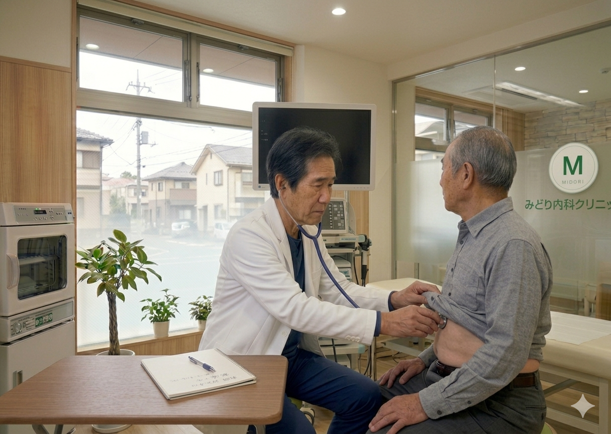
鎮静剤を使用した
苦痛の少ない内視鏡検査
「検査が怖い」「以前つらかった」――そうした不安をお持ちの方にこそ、ぜひ知っていただきたい取り組みがあります。当院では、院長自らが鎮静剤を用いた苦しくない・痛くない内視鏡検査を実施しています。お一人おひとりの体に合わせて薬剤量を見極めながら、安全で確実、そしてできる限り体にやさしい検査を行います。鎮静のエキスパートによる検査を、安心してお受けください。さらに、検査後の腹部膨満感やげっぷ・おならを抑えるために、通気には体に吸収されやすい炭酸ガスを採用しています。検査後もできるだけ快適にお過ごしいただけるよう工夫しています。

胃・大腸カメラの
同日検査が可能
同日に胃カメラと大腸カメラの両方を実施可能です。通院回数を減らし、お忙しい方にも便利にご利用いただけます。検査中にポリープが見つかった場合は日帰り切除にも対応します。

駅から徒歩3分の
好アクセス
青山一丁目駅から徒歩3分にありますので、お仕事帰りの患者様にもアクセスしやすい立地です。お車でお越しの方は提携駐車場をご利用いただけます。
徹底した
衛生管理
内視鏡は検査ごとに日本消化器内視鏡学会のガイドラインに準拠した高水準の洗浄・消毒を実施。院内の換気や空気清浄にも配慮し、安心して受診いただける環境です。
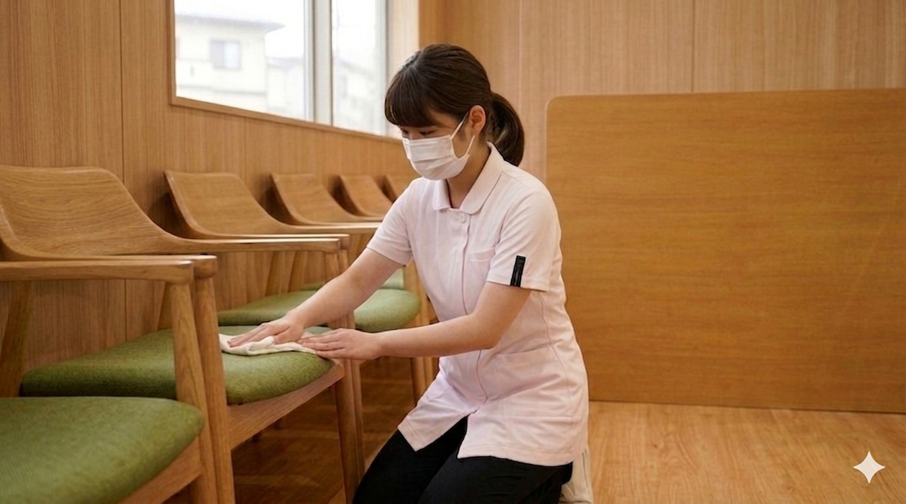
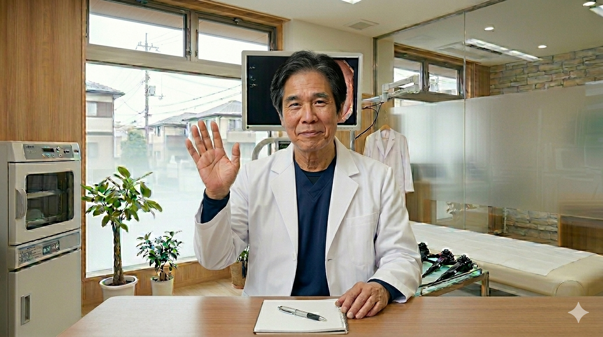
当院は内科・消化器内科を専門とするクリニックです。「胃が痛い」「お腹の調子が悪い」といった日常的な消化器症状から、胃カメラ・大腸カメラによる精密検査まで、幅広く対応しております。
患者様お一人おひとりに丁寧に向き合い、わかりやすい説明と苦痛の少ない検査で、安心して受診いただける環境づくりに努めてまいります。
※当サイトはデモサイトです。実在するクリニックではありません。
食道・胃・十二指腸を直接観察する検査です。経鼻・経口を選択可能。鎮静剤使用で苦痛を軽減し、早期がんやピロリ菌感染の発見に役立ちます。
大腸全体を観察し、ポリープや大腸がんの早期発見を行います。検査中にポリープが見つかった場合はその場で日帰り切除が可能です。
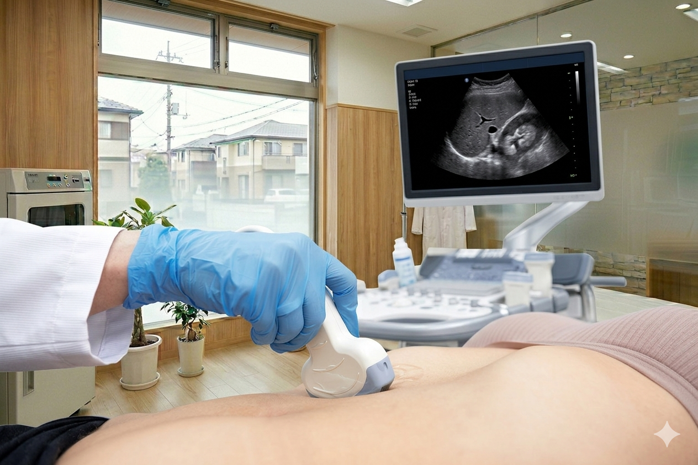
肝臓・胆のう・膵臓・腎臓・脾臓などの腹部臓器を超音波で観察します。痛みがなく被ばくもない、体に優しい検査です。
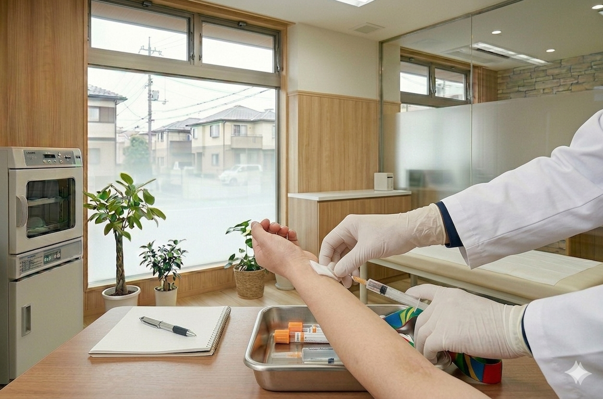
肝機能・腎機能・脂質・血糖値・貧血・炎症反応・腫瘍マーカーなどを測定。生活習慣病の早期発見や消化器疾患の診断に活用します。
胸部・腹部のX線撮影により、肺や腸の状態を素早く確認します。腸閉塞や腸管ガスの異常など、緊急性の高い疾患の初期評価に有用です。
一般健診・特定健診・雇入時健診に対応。オプションで胃カメラや腹部エコーの追加も可能です。消化器専門クリニックならではの精密な健診をご提供します。
| 月 | 火 | 水 | 木 | 金 | 土 | |
|---|---|---|---|---|---|---|
| 午前9:00〜12:30 | ● | ● | ● | ● | ● | ● |
| 午後14:00〜18:00 | ● | ● | − | ● | ● | − |
受付は診療終了30分前まで
休診日：水曜午後・日曜・祝日
内視鏡検査は完全予約制
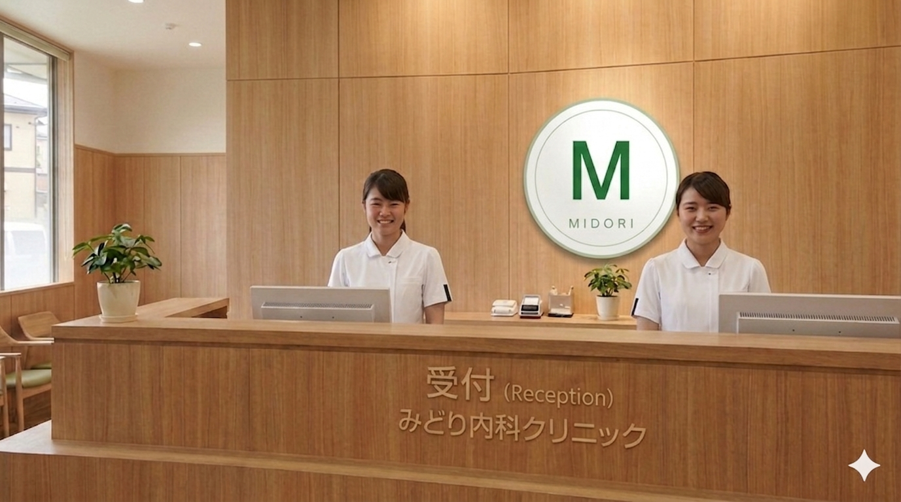
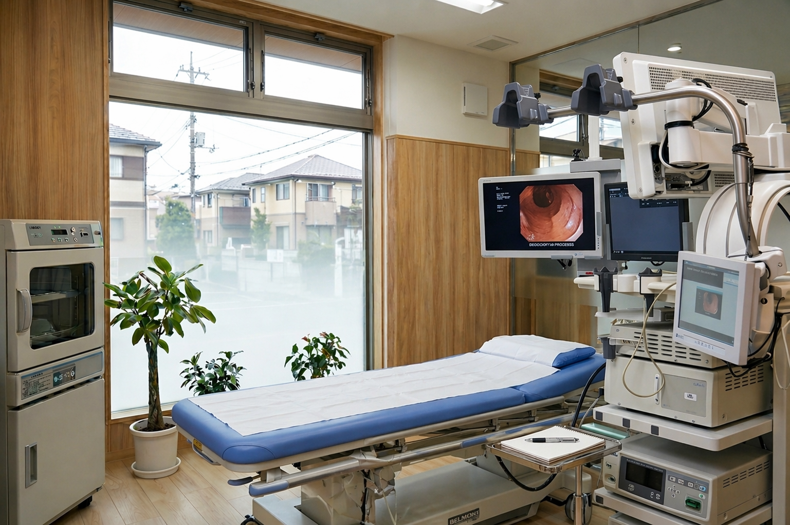

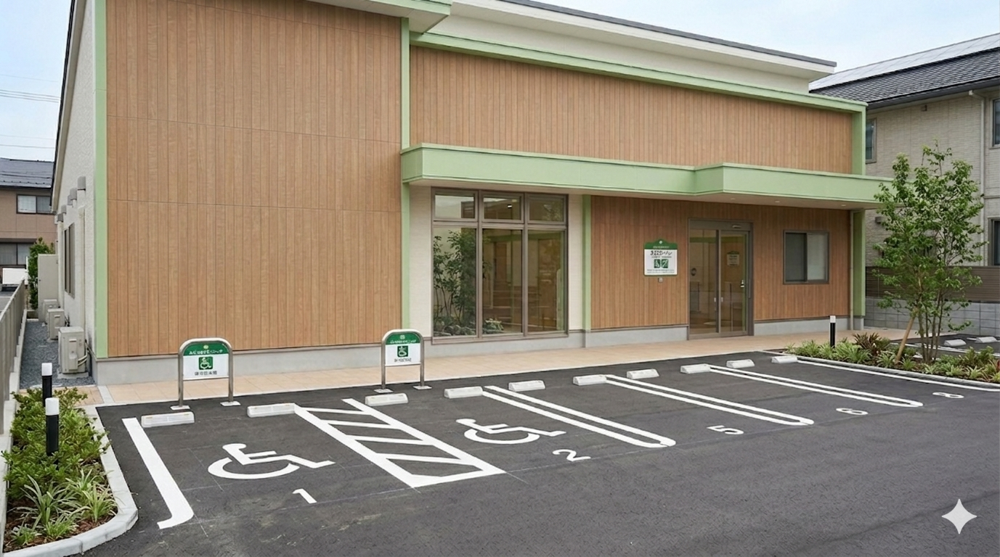
消化器の健康に関する情報をわかりやすくお届けします。
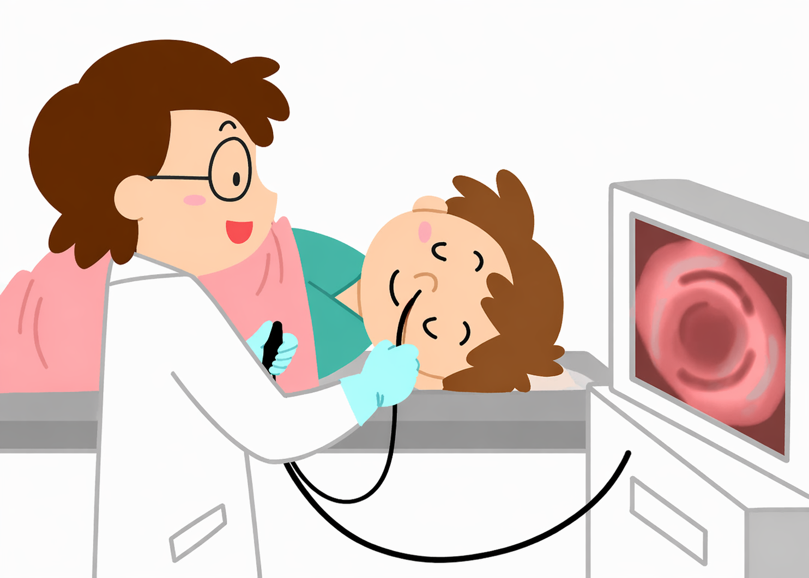
胃カメラ検査は食道・胃・十二指腸の病変を直接観察できる重要な検査です。検査前の準備や当日の流れについて解説します。
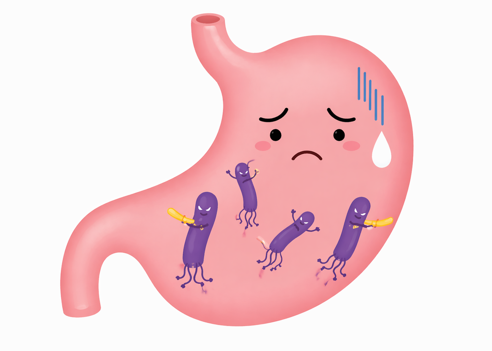
ピロリ菌は胃がんの大きなリスク因子です。感染の仕組みや除菌治療の方法についてお伝えします。
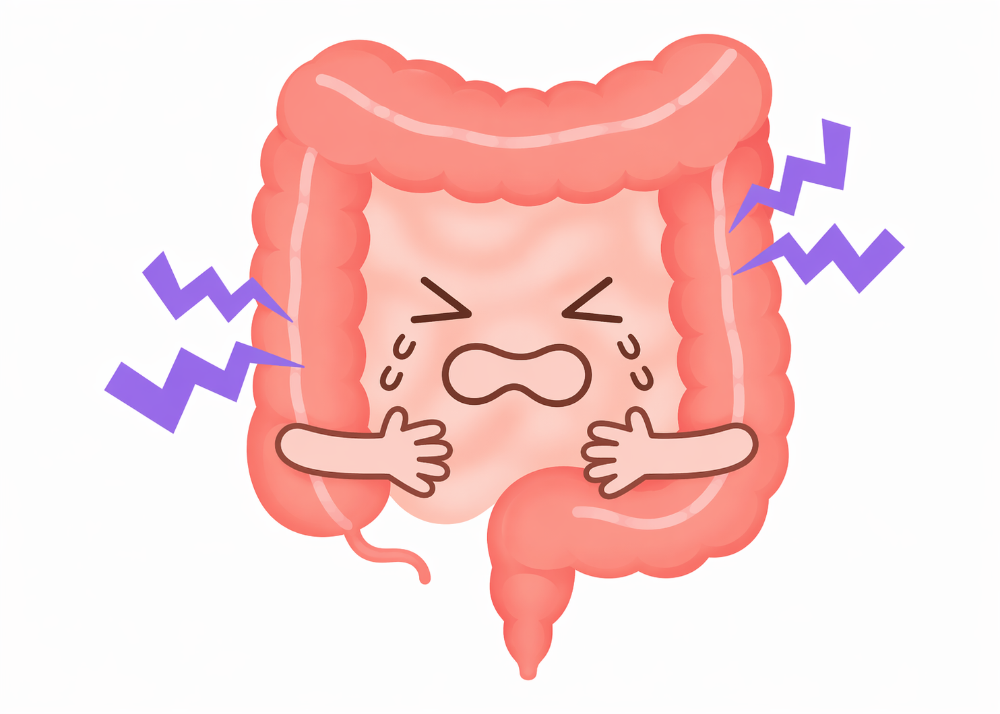
大腸がんは早期発見で治癒率の高いがんです。大腸カメラ検査の流れと前日準備を解説します。
| 住所 | 〒107-0062 東京都港区南青山1-2-3 メディカルビル3F |
|---|---|
| 電話 | 03-0000-0000 |
| 最寄駅 | 東京メトロ 青山一丁目駅 徒歩3分 |
| 駐車場 | 提携駐車場あり（2時間まで無料） |